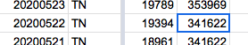
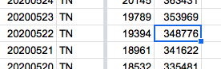

[TN Historicals] May 22 numbers
Issue number 468
muamichali opened this issue on May 29, 2020 at 5:58 pm
Labels Historical Data stale
Dear Covid Tracking Project (and RT.live):
First, great job and I appreciate your efforts to distribute good data to everyone. Thank you.
It appears your data for May 22 for the state of Tennessee has an error in the number of tests. It is stated at the level of positives (433). The data set download from the state of Tennessee has it at 7,587. The correction will also impact your number of tests for May 23, which you have at 12,742 versus the state data set at 5,588. I think this is impacting the algorithm at rt.live which uses your data for its calculation (and whom I am copying on this email so they also know) for the state of Tennessee.
Thanks,
Looks like a data entry mistake; the negative number was not updated on 6/22 but all the other numbers in States Daily are correct. I’ve fixed the negative number to 348776 (331393+17383) based on the secondary TN screenshots, which fortunately were fixed that day.
Before: 
After: 
This issue has been automatically marked as stale because it has not had recent activity. It will be closed if no further activity occurs. Thank you for your contributions!